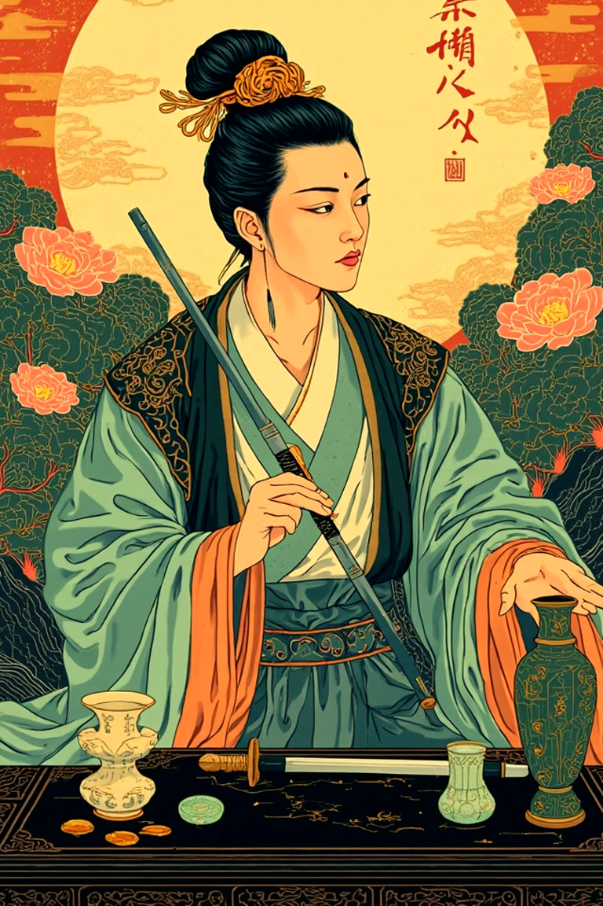

现状魔术师 · 正位
你手里已经有可以开始的东西
魔术师首先指向资源的可用性。你现在的困惑未必来自能力不足，更像是已有经验、表达、关系和执行力还没有被放进同一个方向里。
风把三张牌带回来了
我是否应该在近期改变工作方向？我想分清真正的准备，和只是想从疲惫里逃开。



魔术师首先指向资源的可用性。你现在的困惑未必来自能力不足，更像是已有经验、表达、关系和执行力还没有被放进同一个方向里。
把最消耗你的三件事和最能让你进入专注的三件事分别写下来。风吹开笼统的念头以后，真正的问题才会露出轮廓。
在作出不可逆决定前，找一位了解目标领域、又不会替你做决定的人谈一次。带着具体问题去，让下一步像林间小径一样清楚。
魔术师提醒你已经握有行动的种子；月亮逆位让雾慢慢退去；隐者邀请你先走一小段安静、真实、可以回头检验的路。
Mneme 是可选的本地记忆。下次对话时说“帮我记住这次阅读”，我会先征求你的同意，再帮你把值得留下的部分放进自己的本地树洞。